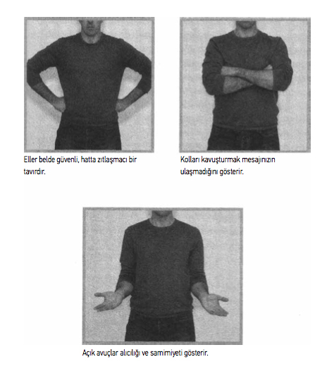

ALTI-TEMEL GÖRÜŞME YÖNTEMİ
Kendinizi yalanın işaretlerini otomatik olarak fark etmeye eğiterek paha biçilmez bir avantaj kazanabilirsiniz. Asimetrik küçümseme bakışı, “Bir şey gizliyorum” duruşu, isabetsiz bir itiraz cümlesi, cansız inkâr; bunlarla hayatınız boyunca, her türlü bağlam içinde, tekrar tekrar karşılaşacaksınız. Bunları fark etme konusunda daha donanımlı olduğunuz takdirde, yaşamın zorluklarıyla daha iyi baş etme konusunda da daha donanımlı olacaksınız.
Ev satın alıyorsanız, satıcının bodrumu ara sıra su bastığını gizleme çabasına karşı uyanık olacaksınız. On altılık ergeniniz eve sabahın üçünde döndüğünde ve size arkadaşının arabasının lastiği patladığı için geç kaldığını söylediğinde, onun doğruyu söylediğine güvenebileceksiniz. Patronunuz haftalık raporunuzu dinlerken gözlerini ovuşturup eliyle ağzını örttüğünde, kırmızı bayrağı görecek ve patronun önemli kaygıları olduğunu bileceksiniz.
Yüzdeki, sözlü ve davranışla bağlantılı ipuçlarını okumayı bir kez öğrendiğinizde, onları her yerde aramaya heveslenebilirsiniz. Ve ister koridorda olsun ister park yerinde, resmi toplantılarda ya da alışveriş merkezinde, iş gezilerinde veya muhtemelen kendi yemek masanızda bile, insanlarla etkileşim içindeyken onları bulmanız garantidir.
Gündelik hayatta ve normal etkileşimlerde, biraz yalan gereklidir. Durmadan doğruyu söyleyen birinin başına çabucak bir felaket gelecektir. Bunun nedenini tasavvur etmekte zorlanıyorsanız, Jim Carrey’nin, büyülenmiş gibi yirmi dört saat boyunca yalan söyleyemeyen ikiyüzlü bir avukat ve kronik bir yalancıyı canlandırdığı Liar Liar (Yalan Yalancı) filmini seyredin.
Asansörde karşılaştığı güzel ve iri göğüslü yeni komşusuna, “koca memeleri olduğu için” herkesin ona iyi davrandığını söyler.
işyerinde, “Selam Bay Reede! Yeni elbisemi beğendiniz mi?” diye cıvıldayan, saç modeli berbat bir kadına, “Dikkati başınızdan uzaklaştırsın yeter” der dişlerinin arasından.
Ona selam veren kibar sarışın meslektaşına, “Hey... hatırlanacak kadar önemli değilsin” der.
Gerçekten de çıplak hakikati her zaman söylemek istemeyiz
ne de duymak isteriz. Ne de her zaman bir yalanın enine boyuna ayrıntılarına ihtiyacımız vardır. Bazen birisinin yalan söylediğini fark etmek ve sonra işine devam etmek yeterlidir. Bazen yalan söylendiğinin farkında, kendinizi kötü bir durumdan kurtarmanız için gereken tek şeydir. Eğer tek bilmek istediğiniz, satılık bir evin inşaatının sağlam olup olmadığıysa, evi (ve o emlakçıyı da) kolayca seçeneklerden eleyebilirsiniz.
Bununla birlikte bir yalandan kurtulmaktan fazlasını amaçladığınız zamanlar olacak. Bazı kritik durumlarda, gerçeği
bütün gerçeği- bilmeniz gerekir. Ona ulaşmak için doğru zamanda doğru soruları sormayı ve daha önce hiç yapmadığınız gibi dinlemeyi öğrenmeniz gerekir. Başka bir deyişle, TEMEL bir yalan-geçirmez görüşme yürütmeniz gerekir.
GERÇEĞE GİDEN BEŞ ADIM
TEMEL görüşme yöntemi yüz, ses ve beden göstergelerini tanıma tekniklerini, yalan söylediğinden şüphelendiğiniz birisinde güven uyandırmak ve işbirliği yapmasını sağlamak üzere tasarlanmış bir ileri sorgulama sistemiyle birleştirir.
Yalanı ortaya çıkarmakta hayli etkilidir; ama en büyük değeri size insanların işaret vermesini sağlayan şeyle ilgili içgörü kazandırmasıdır.
TEMEL’de sadece beş adım vardır:
Temel davranış Açık uçlu sorular sorun Kümeleri inceleyin Boşlukları sezin Teyit edin
Bu bir sorgulama tekniği değil. Tersine, konuştuğunuz kişinin size hakikate giden yolu göstermeye gönüllü olmasını sağlayan bir sohbet rehberidir; sizin tek yapmanız gereken bakmak, dinlemek ve izlemektir. TEMEL yöntem dostça bir ilişki kurmanıza, mevcut çıkmaz konusunda yeni bir bakış açısı ortaya çıkarmanıza ve insanları size düşündüklerinden daha fazla şey anlatmaya cesaretlendirmenize yardım eder.
TEMEL adımların çoğunun birbiriyle örtüştüğünü ve eşzamanlı atıldığını ve işlemin bir dereceye kadar sizin sezgilerinize ve empati yeteneğinize dayandığını fark edeceksiniz. Bazı yalan yakalama eğitmenleri ısrarla, davranışa yönelik ipuçlarından oluşan belirli bir liste olduğunu söylerler ve örneğin bu listedeki beş unsurdan üçünü fark ettiğiniz takdirde, birini kesinlikle yalan söylerken yakaladınız demektir. Fakat bu yöntem çok fazla formüle dayanıyor. insanların karmaşık, önceden kestirilemez ve çelişkili -formüle uymayacak her şey-olduğu gerçeğini hesaba katmıyor. Ya davranışla ilgili sadece bir ipucu görürseniz ve o davranış da çok önemliyse? TEMEL, önsezilerinizin peşinden gitmeniz ve aradığınız cevapları bulduğunuzdan emin oluncaya kadar gördüğünüz ve duyduğunuz her şeyi sorgulamanız için size azami esneklik imkânı verecek şekilde tasarlanmıştır.
TEMEL ADIMLAR
Adım #1: Temel Davranış
Büyük olasılıkla yıllardır farkında olmadan insanları temel bir çizgiye oturtmaktasınız. insanlarla vakit geçirdiğimizde, onların kişisel özelliklerine, konuşma kalıplarına, iyi ve kötü alışkanlıklarına, bilinçli ya da bilinçsiz dikkat ederiz. Örneğin, normalde dost canlısı Jim’e çarşamba günleri sabah on birden önce bir şey sormanın anlamsız olduğunu biliriz; çünkü şirket başkanıyla düzenli olarak her çarşamba saat onda yaptığı toplantıdan önce sinirlidir. Sakin, soğukkanlı Amy bir toplantıda sesini yükselttiğinde -Amy bunu ancak ciddi bir kaygısı veya itirazı olduğu zaman yapar ve dikkat çektiği konu da genellikle doğrudur-, bunu reddetmenin iyi bir fikir olmadığını biliriz. Kyle’ın tırnaklarının çevresindeki etleri kemirdiğini ve Wanda’nın bazen kekelemesine neden olan asabi tiki olduğunu biliriz.
Jim, Amy, Kyle ve Wanda’nın temel hareketlerini belirledik, dolayısıyla normal koşullar altında nasıl davrandıklarını biliyoruz. Bu iş arkadaşlarının yalan söylemediklerinde nasıl davrandıklarını zaten bildiğimiz için; yalan söylerken sergileyebilecekleri davranışsal, sözel veya yüzdeki olağandışı herhangi bir ipucunu yakalamakta zorluk çekmeyeceğiz demektir. Ayrıca bu insanların bazen yalanın ipuçları gibi görünebilen alışkanlıklara sahip olduklarını da biliriz -Kyle’ın tırnak etlerini yemesi örneğin-, ama bunlar sadece sıradan davranışın parçasıdır (belki sinir bozucu ama dikkate değer değil).
Meslektaşlarınızın temel hareketlerini belirlemek size güvenilir bir dayanak noktası, onların davranışlarındaki değişimleri ölçmek için kullanabileceğiniz bir standart verebilir. Bu, çevrenizdeki herkesle -eski meslektaşlar, yeni dostlar veya yabancılarla- geliştirebileceğiniz iyi bir beceridir. Kahve makinesinin başında sohbet başlatarak veya asansörde aşağı inerken geçen otuz saniye içinde bu yöntemi uygulayarak çalışma yapabilirsiniz. Birazcık çaba karşılığını fazlasıyla verecektir.
Bununla birlikte kimin mesleki veya kişisel yaşamınızda fark yaratacağını asla bilemezsiniz. Evraklarınızı fakslayan stajyer, bir sonraki pazarlama müdürünüz olabilir; rötar yapan uçağınızı beklerken havaalanında sohbet ettiğiniz insan gelecekte büyük aşkınız olabilir. ister insanları tekrarlanan etkileşimlerle tanımaya zaman ayırabilin ister uçakta temeli belirlemeniz gereksin, yakından gözlemlemek istediğiniz beş davranış vardır:
Kahkaha: Kahkaha atarken kişinin sesi nasıl çıkıyor?
Ses: Kişi genellikle hangi hızda, ne kadar yüksek sesle ve hangi perdeden konuşuyor?
Duruş: Kişinin duruşu normal olarak nasıl görünüyor?
Hareketler: Kişi ne kadar sık el kol hareketi yapıyor, ellerini havada sallıyor, kımıldanıyor, ayaklarını çapraz yapıyor ve çözüyor?
Tepkiler: Tepki gösterdiğinde veya üzücü, heyecan verici ya da sinir bozucu bir şeyi tartışırken kişinin yüzü ve duruşu nasıl değişiyor?
Bu ayrıntıları gözlemlemek için insanlarla normal etkileşime girme şeklinizi değiştirmek zorunda değilsiniz. Tek fark, bu sefer etkileşim sırasında gördüğünüz ve duyduğunuz şeye daha çok dikkat edecek olmanızdır. Başkalarının hüsran veya çatışmayla nasıl başa çıktığına da dikkat edin. Toplantılarda birisi kendisiyle aynı fikirde olmadığı zaman Kyle nasıl davranıyor? Amy bayilerle telefonda nasıl görüşüyor? Ana fikir, insanların sıradan hayat ve iş meseleleri hakkında konuşurken nasıl göründüklerine ve seslerinin nasıl olduğuna ilişkin ince ayrıntıları fark etmektir.
Bunun anlamı sizin kendi temel davranışınızın paranoya veya iş arkadaşlarınıza karşı güvensizlik olması gerektiğini iddia etmek değildir. Bir gün sizi kandırmaya çalışabilirler diye insanların temel davranışlarını gözlemlemezsiniz. insanlara, size istediğiniz şeyi vermelerine faydası dokunacağı için kibar davranmazsınız. Toplumsal nezaket, toplumun iyi uyumlu bireylerinden beklenen bir şeydir; çevrenizdeki insanların davranışlarına ve kaygılarına özen göstermek sıradan bir nezaket ve olgun yönetim biçimidir. iyi bir lider ve yönetici olmak sadece işin yapılması değil, aynı zamanda sizinle çalışan insanların onlara önem verdiğinizi, ofis dışında da bir yaşamlarının olduğunu bildiğinizi ve kuruluşunuza katkılarına değer verdiğinizi bilmelerini sağlamaktır. Sizin ilginiz insanların işlerinde kendilerine daha çok yatırım yapıldığını hissetmelerine ve ekibinize daha çok bağlanmalarına yol açacaktır; bu da doğal olarak daha büyük sadakat ve dürüstlük anlamına gelir.
Profil çıkarma. Diyelim bir nedenle bir meslektaşınızın içten içe farklı davrandığını hissediyorsunuz. Sizi tam olarak neyin uyandırdığını bilmiyorsunuz ama antenleriniz havada. Profil çıkarma bu noktada işe yarayabilir.
Profil çıkarma, temel davranışı belirleme sürecinin bir uzantısıdır. Temel davranışını belirlediğiniz kişi hakkında ne biliyorsunuz? Maddi açıdan güvende mi? Son zamanlarda duygusal bir sorun yaşadı mı? Geçmişinde uyuşturucu veya alkol kullanımı var mı? Rapor edilmiş öfke kontrolü sorunları, beklenmedik kişilik değişiklikleri veya yakın zamanda görülen asosyal davranışlar var mı? Özsaygısı nasıl? Dalkavukluğa yatkınlığı var mı? Kendi hataları için başkalarını suçlamaya meyilli mi? Zihinsel olarak bir “kurban”a sahip görünüyor mu? Otoriteye karşı tavrı ne? Genel olarak kurallara uyuyor mu, yoksa isyankâr mı? Kazandığından daha fazlasını harcıyor görünüyor mu?
Aynı şekilde bu soruları, söz konusu çalışan veya çalışanlara karşı peşin hükümlerde bulunmak için sormuyorsunuz. Davranış profili çıkarmak, değer bakımından etkisizdir. (Profil çıkarmayı kötüye kullanmak da başka bir mesele hiç şüphesiz.)
Eğer bir çalışanın profilini çıkarıyorsanız, muhtemelen bunu tam olarak belirleyemediğiniz bir sorunu çözmek amacıyla ilk adım olarak yapıyorsunuz. Kimi zaman kendinizi kuruluşunuzun yüzeyinin altını daha derin kazmaya mecbur hissettiğiniz bir durumda bulabilirsiniz. Bu olduğunda, bir sonraki adımı atmanın zamanı gelmiş demektir.
TEMEL ADIM #1 GÖRÜŞME: TEMEL DAVRANIŞ
Her günkü davranışlara özel bir dikkat gösterin:
Kahkaha
Beden hareketleri
Duruş
Ses özellikleri
Tepki süreleri ve ifadeler
Adım #2: Açık Uçlu Sorular Sorun
Bu aşamaya geldiyseniz, nedeni iş yaptığınız birisinin ikiyüzlü davrandığını hissetmenizdir ve daha fazla şey bilme ihtiyacı duyarsınız. Temel çizgiyi belirlerken, özel bir olayla ilgili bilgi edinmek için deşmiyorsunuz; sadece bir insanın rahat, normal koşullar altında düzenli olarak nasıl göründüğüne ve konuştuğuna dair fikir ediniyorsunuz. Sorularınızın belli bir yapıya sahip olması gerekmez, sadece samimi olmaları ve gerçek, doğal bir karşılık almaları yeterlidir. Bununla birlikte ikinci TEMEL adım biraz daha strateji gerektirir.
Açıkçası, sadece, “Aslında benim grafik tasarım hizmetlerimle ilgilenmiyorsun, değil mi? Sadece rakibime götürmek için bir fiyat teklifi almak istiyorsun” demek size doğru bir cevap getirmeyebilir. Meslektaşınız gerçekten bir dalavere peşindeyse, basitçe “Hayır” diye cevap verecek. Bu da konuşmayı orada kesecek ve sizin yalanı yakalama fırsatınızı sınırlayacaktır. Dolayısıyla tartışmaya ve bilgi paylaşımına teşvik eden açık uçlu sorular hazırlamanız gerekir.
Açık uçlu bir soru tam olarak nedir? Kapalı bir soruya bakarak başlayalım. Kapalı bir soru, kısa bir “evet” veya “hayır”la cevaplanabilen bir sorudur. Konuştuğunuz kişiyi size talep ettiğinizden daha fazla bilgi sunmaya teşvik etmez. Eğer bu insan herhangi bir dalaverenin peşindeyse, kapalı bir soru kapıyı daha fazla şey öğrenme fırsatlarınıza kapatır. Kapalı sorulara örnekler şunlardır:
“Rakiplerimizden biriyle mi görüşüyorsun?” “6:15 uçağıyla New Jersey’ye gittin mi?” “Akşam çıkmadan önce o raporları masama bıraktığından emin misin?”
Şu şekilde sormuş olsaydınız, nasıl farklı bir karşılık alabileceğinizi hayal edin:
“Continental Metrics yerine bizimle anlaşma yapmayı tercih etmeye nasıl karar verdin?
“Havaalanına doğru yola çıktıktan sonra ne oldu?”
“Ofisten çıkmadan önce başka neyi tamamlamaya çalışıyordun?”
Temel çizgiyi belirlerken açık ve kapalı sorular sorabilirsiniz. Bununla birlikte şüphe duyduğunuzda, sorduğunuz soruların biçimi oldukça önemlidir.
YALAN YAKALAMA TAVSİYESİ
Zor bir soruya, onu eksiksiz tekrarlayarak karşılık vermek, yanıltıcı bir cevap hazırlamak için zaman kazanmaya yönelik bir geciktirme taktiğidir. Dürüst bir insan sadece doğru duyduğundan emin olmak istediğinde, sorunun yalnızca bir bölümünü tekrarlar.
Açık uçlu sorular insanları size kapsamlı bir cevap vermeye teşvik eder. Böyle sorular aynı zamanda bildiğinizi kendinize saklamanıza da olanak verirler. işte basit bir örnek: James adındaki çalışanınız bu sabah önemli bir toplantıyı kaçırdı ve siz nedenini öğrenmek istiyorsunuz. “Yani George’la birlikte ofisten çıktınız ve sonra sen yemeğe gittin ve oradan da eve mi gittin?” diye soracak olsaydınız, James’in tek yapması gereken söylediğiniz şeyi doğrulamak veya reddetmek olurdu. Size daha fazlasını anlatması için bir nedeni olmayacaktı. Fakat şimdi, onun yerine, “George ve sen ofisten çıktınız. Sonra ne yaptınız?” diye sorduğunuzu düşünün.
Eğer James dürüstse, size hakikati anlatacak. O ve George hamburger ya da Hint yemeği yemek konusunda çekişmiş olabilirler; sonunda yazı tura attıktan sonra yeni Web sitesi hakkında beyin fırtınası yapmak için harika bir yer olduğuna karar verdikleri köşedeki bara yöneldiler. Bu yüzden James eve geç gitti, sabah kalkamadı ve sabahki toplantıyı kaçırdı. Bununla beraber eğer James bir şey saklıyorsa, şimdi sizin zaten bildiğiniz bir şey hakkında, sizin bilmenizi istediği şey ve sizden saklamak istediği şey konusunda düşünmesi gerekiyor. Ayrıca kendi hikâyesinin George’unkiyle örtüşüp örtüşmediği-ni de göz önünde bulundurmak zorunda kalabilir.
James’in bu düşünceleri işlemden geçirdiği ve bir cevap oluşturmaya başladığı saniyeler içinde, siz de onun yüzü ve davranışlarıyla sızdıracağı ipuçlarını görmek için izliyorsunuz. “Siz ikiniz hangi sıklıkta işten sonra çalışıyorsunuz?” sorusuyla devam edebilirsiniz. Bu soru James’i, “Çok sık” demeye sevk edebilir; bu da bir hak sahibi olma tavrını işaret edebilir. Yahut, “Sürekli, ama eğleniyoruz” diyebilir ki bu da James’in işini sevdiğini ama toplantıyı kaçırmasının işle ilgili yorgunlukla değil çok fazla birayla alakalı bir durum olduğunu işaret edebilir. Her iki durumda da, kapalı bir soru sorarak öğrenebileceklerinizden çok daha fazlasını aldınız.
Açık uçlu sorular sorarken akılda tutulması gereken dört hedef vardır.
Bildiğiniz ve bilmediğiniz şeyleri belirleyin.
Yakınlık kurun.
Bir karşılık elde edin.
Doğru hikâyeyi anlatın.
Bildiğiniz ve bilmediğiniz şeyleri belirleyin. Soru sormaya başlamadan önce, araştırdığınız olayla ilgili olabildiğince çok gerçeği sıralamanız gerekir. Şu anda tam olarak hangi bilgiye ulaşmak istediğinizi ve daha sonra neyi öğrenmeyi bekleyebileceğinizi açıkça belirlemelisiniz.
Araştırmak istediğiniz olay için ihtiyaç duyduğunuz kanıtların listesini yapın. Alakalı, gerçeğe dayalı kanıtları ve sadece söylenti olabilecek şeyleri gözden geçirin.
Bundan sonra görüşme yapacağınız insanla ilgili bildiklerinizi sıralayın. Bu listede tarafsızlığınızı etkileyebilecek bir şey var mı? Örneğin pazarlama müdürünüzün gizli ticari sırları bir rakibe satmakla itham edildiğini düşünün - ve siz de onun sekreteriyle bir ilişki yaşadığını biliyorsunuz. Bu bilgi, bazı önyargılı fikirleri, onun yuvasına bağlı bir aile adamı olduğunu bilseydiniz taşıyabileceklerinizden farklı fikirleri görüşmeye taşımanıza neden olabilir. Bu nedenle, araştırmanızla alakası olmayan nedenler yüzünden ona karşı önyargılı olmadığınızdan emin olmalısınız.
Bu pazarlama müdürünün suçlu olduğundan emin olsanız bile, her konuşmayan açık bir zihinle yaklaşmanız gerekir. Araya girme dürtünüzü kontrol edin; hiçbir varsayımda bulunmayın; ve son olarak, önyargınızı askıya alın. Kendi haklılığınızdan çok fazla emin olarak, sizin hatalı olduğunuzu gösteren kanıtları gözden kaçırmak isteyeceğiniz son şeydir.
Ele almak istediğiniz olayla ilgili “kim, ne, ne zaman ve nerede” unsurlarını yerine oturtmak için sorabileceğiniz bütün soruları hazırlayın. Sonra olası cevapları sıralayın ve sonra her hayali cevaba bir karşı-cevap belirleyin. Ortaya attığınız her soru bir kemik gibi olacak; sizin işiniz görüştüğünüz kişinin en çok hangisinin tadını beğendiğini görmektir. Fikir, konuşmayı devam ettirebilmek için duyduğunuz her şeye hazırlıklı olmaktır. Yakınlık kurmanıza yardım edecek sözel bir yansıtma süreci planladığınız için, iyi gelişmiş bir empati duygusunun çok önemli olduğu yer burası.

Yakınlık kurmak. Ne kadar az tehditkâr, yargılayıcı ve şüpheci olursanız, birisinin size açılma ihtimalinin o kadar yüksek olduğu sır değil. Görüşmenize başlarken, standart “etkin dinleme” yoluyla yakınlık kurabilirsiniz. Etkin dinleme ille de karşınızdaki insanla aynı fikirde olmanızı gerektirmez, ama sizin anlatılan şeyle ilgili yatırımınızı ve anlayışınızı gösterir. Belli başlı örnekler şunlardır:
Göz temasını korumak
Öznenizin beden dilini ve konuşma hızını yansıtmak
Öznenizin şakalarına gülmek
Tehditkâr olmayan, samimi bir şekilde oturmak
Tartışmalardan kaçınmak
Fakat daha da ileri gidip bir işbirliği ruhu geliştirmeniz gerekecek. Dinleyicinizle ortak bir zemin bulmanız gerekecek: “Gün içinde ben de zamanı iyi kullanmakla ilgili ciddi sıkıntılar yaşadım.” Ayrıca, onun kişiliğini yargılamadığınıza güvenmesini sağlamanız da gerekecek: “Ailene bakmak için çok çalıştığını görebiliyorum ve buna saygı duyuyorum.”
Kullandığınız dile dikkat edin. Resmi ve açık ifadeler kullanırsanız, bağlantıyı derhal kaybedersiniz. Örneğin, eğer özneniz yolsuzluktan soruşturma altındaysa, asla yasal “yolsuzluk” tabirini, hatta “hırsızlık” tabirini bile kullanmayın. Onun yerine, “Görünüşe bakılırsa birisi parayı almış,” deyin. Öznenizin kendini yaptığı şeyden uzaklaştırmaya çalışıyor olabileceğini hatırlayın. Onun bir nedenden ötürü suçlu olduğunu ileri süren kelimeler kullanmak tek kelime etmemesine neden olabilir.
“NİÇİN” DİYE SORMAYIN
Bir insanın savunmaya geçmesini sağlamanın bir numaralı yolu, “Niçin?” sorusudur. Onun yerine, “Bunu yapmana neden olan şey nedir?” diye sorun.
“Toplantı saatini değiştirmene neden olan şey nedir?” sorusu, “Toplantı saatini niçin değiştirdin?” sorusundan daha iyi bir karşılık alacaktır. Aynı şey, “Eve geç gelmene neden olan şey nedir?” veya “İşi bitirmeni engelleyen ne oldu?” için de geçerli. “Niçin” sorularınızı bu şekilde hazırlamanız, öznenizin davranışının mantıklı bir nedeninin olması gerektiğini -ve sizin o nedeni anlamaya hazır olduğunuzu-gösterir.
“Niçin” kelimesini derhal kelime dağarcığınızdan çıkarın, insanlar size karşılık verişinde dikkat çekici farklılıklar olduğunu göreceksiniz.
Masum ya da suçlu, herkes yanlış anlaşılmaktan korkar; bu nedenle zorlayıcı bir tutum sergilemeyin. Onun yerine öznenizi onu anladığınıza ve onun hüsranlarını, fikir ayrılıklarını ve yükümlülüklerini anlayışla karşıladığınıza temin etmek istersiniz. insanlar kendilerine merhamet ve anlayışla yaklaşıldığını hissettiklerinde, size açılmaları daha muhtemeldir.
Gözlenebilir bir karşılık alın. Öznenize, dikkati dağıtan şeylerin bulunmadığı rahat, özel ve sakin bir ortamda, olabildiğince kayıtsız yaklaşın. ister suçlu olsun ister masum, mikroskop altındaki bir böcek gibi hissetmek istemeyecektir. Siz ne kadar göz korkutucu olmazsanız, istediğiniz bilgiye o kadar çabuk ulaşırsınız.
Ortamın dengesini koruyun. Eğer özneniz yüksekten korku-yorsa, onu çepeçevre cam kaplı bir binanın en tepesinde, elli dördüncü kattan caddeye bakan bir ofise götürmek istemeyeceksiniz. Kıpırdanmasına, şüphe uyandıran bakışlarına ve parmaklarını masanın üzerinde tıkırdatmasına sorularınızın mı, yoksa bu kadar yüksekte olmaktan duyduğu korkununmu neden olduğunu asla bilemeyeceksiniz. Verdiği karşılık ne güvenilir olacak ne de gözlenebilir olacaktır. Eğer mecbur değilseniz, birisiyle herkesin önünde görüşme yapmayın; çevredeki dikkat dağıtıcı unsurlar da gözlemlediğiniz davranışın güvenilmez olması ihtimalini artıracaktır.
Görüşme resmi olarak bittiği zaman, bunu açıkça belirtin ama sohbete devam edin. Çoğu suçlu şahıs görüşme sonrası büyük bir rahatlama gösterecektir - bir duruş değişikliği, yeni bir solunum kalıbı, sinirli bir şaka veya kahkaha. Bu davranışlar sizin açınızdan görüşmenin kendisi kadar faydalı olabilir.
Doğru hikâyeyi anlatın. Her yalancının bir bahanesi vardır - yalanıyla yaşayabilmek için kendine anlattığı bir hikâye. Mantıklı hale getirmek, yalancıların para çaldıkları, özgeçmişlerinde yalan söyledikleri, bir Ponzi şeması kurdukları, öğle yemeğinde sarhoş oldukları, arkadaşlarına komisyon verdikleri için sert bir şekilde yargılanmamalarının gerektiğini açıklamalarına yardım eder.
YALAN YAKALAMA TAVSİYESİ
Bir sorguyu sona erdirirken dikkat edin. Zor durumdaki biri eğer sorgulamanın bitmesiyle anlaşılır bir rahatlama gösteriyorsa, nedeni yanıltıcı hikâyesinin işe yaraması olabilir.
Örneğin patronundan çalan birisi kendine aşağıdaki hikâyelerden birini anlatabilir:
“Ben dürüst bir insanım ama ekonomi berbat bir halde ve ben ailemi geçindirmek için ne gerekiyorsa yapmak zorundayım.”
“Başka seçeneğim yoktu - karım hasta ve çalışamıyor ve benim birinci yükümlülüğüm aileme karşı.”
“Bu şirkette kontrollerin berbat olduğunu göstermek için bir şey yapmak zorundaydım.”
“Bu aslında hırsızlık değil, çünkü her zaman parayı geri vermek niyetindeydim. Ben iyi bir insanım.”
“Elbette rüşvet aldım. Herkes alıyor - almazsan dışlanırsın.”
Ussallaştırmalar o kadar güvenilir bir biçimde tahmin edilebilir ki, soruşturmacıların konu kitapları vardır - bir suçlunun kendi suçuyla ilgili verebileceği bilinen tipik nedenlerin hepsinin kayıtlı olduğu bir nevi “kutsal kitap”. Sorgucular bir görüşmeye, şahsın o belirli suç için verebileceği yanıltıcı beş ya da daha fazla mazereti gözden geçirerek hazırlanırlar. Sizin aynısını yapmanız gerekir. Bir insanın yalanını haklı göstermek veya hareketlerinin gerisindeki asıl nedeni çarpıtmak için kendine söyleyebileceği, düşünebildiğiniz bütün ussallaştırmaların bir listesini çıkarın.
Öznenin “suçlama kalıbını” -yanlış davranışları için tipik suçu üzerinden atma alışkanlıklarını- dikkate aldığınızdan emin olun. Suçlama kalıplarını anlamak hikâyenizin hazırlık aşamasında ince ayar yaparken çok önemlidir. Özne kendini mi suçlama eğiliminde, yoksa başkalarını mı? Bir kurbanı mı suçlaması muhtemel (“Bunu o istiyordu”), yoksa kendini mi kurban olarak görüyor (“Oyuna getirildim”)? Bir öznenin suçlamayı karşılama veya reddetme şekli, hikâyesini anlatmasına yardım etmeye çalışırken kullanacağınız yöntemi biçimlendirecektir.
Hikâyeler ileri sürün. Law & Order (Hukuk & Düzen) gibi dizilerde sorgu sahnelerini izlediğinizde, ödün vermeyen bir sorgucu genellikle kendini korumaya çalışan bir zanlının tepesinde dikilir ve itirafta bulunması için zanlıyı onu korkutacak şekilde hazırlanmış kaba, saldırgan sorulardan oluşan dur durak bilmeyen bir yaylım ateşine tutar. Bu iş televizyon dizilerinde böyle olur, gerçek hayatta değil. Gerçek bir sorgulamaya tanık olsaydınız, birbirinden yaklaşık bir buçuk metre uzaklıktaki sandalyelerde oturan, sessizce konuşan iki insan görürdünüz. Sorgucu kendini düşman gibi tanıtmayacaktı;onun yerine sakin bir monologla başlayacak ve zanlının kandırma eylemini gerçekleştirmesinin olası nedenlerini ortaya koyacaktı. Odaya bir işbirliği duygusu bile hâkim olabilir: “Bunu çözmek için birlikte çalışıyoruz.”
Sizin görüşmeniz de böyle yürümeli. işbirliği yapmak istiyorsunuz, öznenizi ezip geçmek değil. Onun kafasına yeni fikirler ekmek değil, var olan bir bahaneyi sağlamlaştırmak istiyorsunuz. Hangi girişin bir karşılık alması daha muhtemeldir?
SUÇ NEYE BENZER?
İhtiyatlı: “Gazeteciyi aradım mı? Ne demek istiyorsunuz?”
Belirsiz: Bir yalancının bir şeyin nasıl yapıldığı hakkında yorumda bulunması pek mümkün değildir: “Ah - O evrakları yakalanmadan nasıl teslim edebildiklerini gerçekten bilmiyorum.”
Fazla kibar, sakin veya bilgili: “Tanrım, ne kâbus; ve birleşme de çok yakında. Nasıl yardım edebilirim?”
Fazladan bilgi vermekte isteksiz: “Size bildiğim her şeyi anlattım - daha ne istiyorsunuz?”
İlgisiz: “Şey, o makalede yazılan her şeye kimsenin inanmayacağına eminim. Anlaşma elbette devam edebilir.”
Zayıf: “Neden bana soruyorsunuz?”; “Böyle bir şey yapabileceğimi nasıl düşünebilirsiniz?”; veya “Sahiden, bana inanmak zorundasınız!”
Kısa: Dürüst öznelerle konuşmaktan korkmazken, suçlu olanlar cevaplarını olabildiğince kısa tutmaya çalışacaktır. Lafı uzatıyorlarsa, nedeni sırf işe yaramaz, yersiz ayrıntılar vermektir.
Mantıksız: Yalancılar size genellikle sizin sorduğunuzdan farklı bir hakikati anlatacaktır. Bu nedenle eğer birisine, “Bu öğleden sonra nerede yemek yedin?” diye sormanız gerektiy-se ve “Gün içinde asla ofisten çıkmam” cevabını aldıysanız, dikkat etmelisiniz. Aldığınız cevap doğru olabilir ama soruyu cevaplamadı. Bir sonraki sorunuz, “Neden olmasın?” olmalı.
Çizgisel: Bir yalancının hikâyesi çoğunlukla katı bir kronolojik sıralama içinde anlatılacaktır ve hikâyenin gelişigüzel bir yerinde toparlaması istendiğinde, geri dönmekte büyük güçlük çekecektir.
Eğer aldatma bir hırsızlık yöntemiyle ilgiliyse, “Şimdi, bunu daha önce, patronun zengin olduğu ve ona çalışan insanların gerçekten az para aldığı yerlerde gördüm John. Gerçekten adil değil” diyebilirsiniz. Yahut, eğer şüphelinin kendini suçlama eğiliminde olduğunu biliyorsanız, üçüncü şahıslarla ilgili bir hikâye ileri sürebilir -şüpheliyi odak noktası yapmamak için-ve bir parça duygusal paylaşım gösterebilirsiniz: “Bu bana birkaç yıl önce benzer bir durumla karşı karşıya kalan bir kadını hatırlatıyor...”
Dinleyicinizi yakından izleyin. Birkaç kilit tepkiyi kontrol ediyorsunuz. Özneniz herhangi bir zamanda daha fazla dikkat sarf etmeye başlıyor, başını sallıyor, duygusallaşıyor; veya tersine duygusunu saklıyormuş gibi dudaklarını büzüyor mu? Eğer değilse, başka bir yol deneyin: “Bir insanın kendi çıkarlarını koruması gereken zamanlar vardır, sence de öyle değil mi? insanların bizi çiğneyip geçmelerine izin veremeyiz.”
Eğitimli soruşturmacılar yirmi-otuz dakika boyunca, doğrusunu yakalayıncaya kadar, usul usul art arda hikâyeler öne sürerler. Her önerinin ne kadar akla yatkın olmasını sağlarsanız sağlayın, dürüst özneler bütün hikâyeleri reddedecektir. Bununla birlikte yargılayıcı değilseniz ve merhametliyseniz, birçok suçlu muhtemelen onları yapmaya muktedir olduklarını asla düşünmedikleri bir şeyi yapmaya iten şeyi anlayan biriyle derdini paylaşma fırsatına balıklama atlayacaktır. Çoğu suçlunun size hakikati söylemek istediğini hatırlayın. işlerini olabildiğince kolaylaştırın.
TEMEL ADIM #2 GÖRÜŞME: AÇIK UÇLU SORULAR SORUN
Kanıtları ve eksik bilgiyi listeleyin.
Kim, ne, ne zaman ve nerede sorularını ve olası cevapları önceden listeleyin.
Öznenizin suçlama kalıplarını, kişisel ve mesleki ihtiyaçlarını çıkarın.
Önyargıya karşı kanıtları kontrol edin.
Yakınlık kurun.
Gözlenebilir bir karşılık alın.
Birden çok hikâye ileri sürün.
Adım #3: Kümeleri İnceleyin
Açık uçlu sorularınızı cevaplayan birini dinlerken, gördüğünüz ve duyduğunuz her şeye dikkat etmeniz gerektiğini zaten biliyorsunuz. Büyük ihtimalle birkaç dakika içinde yüzde, davranışlarda ve sözlerde ipucu kümelerini fark etmeye başlayacaksınız. Bunlar tek başlarına hiçbir anlam ifade etmezler. Birlikte, size öznenizin ruh haliyle ilgili iyi bir fikir verecekler.
Belki, siz Carl’ın önemli bir hedef müşteriyi neden takip etmediğini anlamaya çalışırken -”Biliyorum, burası gerçekten çok hareketliydi; yapılması gereken bütün telefon görüşmelerine yetişmek zor olmalı”-, onun başını geriye atmadan önce öne eğdiğini ve burnundan derin derin nefes alıp verdiğini, dudaklarını sımsıkı birbirine bastırdığını, parmak eklemlerini çıtlattığını not edersiniz. Bu davranışları daha önce de gördünüz ama hepsini bir oturuşta mı? Carl neden rahatsız? Temel çizgiyi belirleme becerilerinizin, empati ve sezginin devreye gireceği yer yine burası.
Bazen birisinin yanıltıcı olduğunu gösteren en büyük ipucu normalde aynı anda gösterilmeyen davranışların meydana getirdiği kümelerde bulunur. Bahsettiğimiz gibi, aldatmaya kararlı insanlar söyledikleri şeye kılı kırk yararak dikkat edeceklerdir; ancak hikâyelerini daha önce tekrar etme fırsatı bulamadıkları sürece, vücutları farkında olmadan onlara ihanet edecektir. Genellikle bir yalanda kelimeleri doğru çıkarmak o kadar büyük bir zihinsel enerji gerektirir ki, yalanı söyleyenin tavırlarını da planlamaya hali kalmaz.
“Öyleyse gerçekte üniversiteye kaç sene gittiniz?” diye soracak olduğunuzda, eşlikçiniz, “Dört” diye cevap verebilir ama sadece üç parmağını kaldırabilir. Genelde hatasını fark edecek ve belki beraberinde sırıtarak ve “Ay!” diyerek düzeltecektir. Şimdi, bu masum bir hata olabilir. Kaldı ki, sözlü ve sözsüz davranış arasında tutarsızlık olduğunda, sözsüz davranışın genelde daha doğru olduğu belirlenmiştir.153
153 http://www.reid.com/educational_info/r_tips.html?serial=12517299181743878.
işte dikkat edilmesi gereken kümelerin bir özeti:
Sözsüz Kümeler
Düzeltme hareketleri
Elleri ovuşturmak
içe doğru bükülmüş ayaklar
Kaskatı üst beden, yersiz durgunluk
Büzülmüş dudaklar veya dudakları ısırmak
Bırakmış bir duruş veya kendini koruma duruşu
Masada ya da yerde nesneleri hareket ettirmek
Görüşme sonrası rahatlama ifadesi
Aşırı terleme, nefes alıp verme, parmak tıklatmak
Göz kırpıştırma hızında değişme
Omuz silkme, sıkılı yumruklar, konuşmayla uyumsuz şekilde yukarı dönük avuçlar
Sahte gülümseme
Kapalı gözler
Sözel Kümeler
Niteleyici cümleler: “Bildiğim kadarıyla...” “Size doğruyu söylemem gerekirse.”
Sorunuzun kelimesi kelimesine tekrarlanması
Doğal olmayan cevap süresi
Zayıf ve özür diler gibi ses tonu
Sorudan kaçmak (Örnek: “Bunu insan kaynaklarına zaten anlattım.”)
Yersiz ayrıntı
Kısa, kırpılmış cevaplar
Dini göndermeler (“incil’in üzerine yemin ederim.”)
Önemsiz ayrıntılara itirazlar (“Hayır - biftek değil, tavuk yedim.”)
Görüşmeden şikâyetçi olmak: “Bu daha ne kadar sürecek?”
Yardımcı olmayan veya ilgisiz tutum
Gerçeklerden çok sizi ikna etmeye daha çok önem verilmesi
TEMEL ADIM #3
GÖRÜŞME:KÜMELERİ İNCELEYİN
Sözlü ve sözsüz şüpheli yanıltıcı davranış gruplarına bakın, özellikle de genellikle birbirine uymayanlara.
Adım #4: Boşlukları Sezin
Birisinin sizi aldattığından şüpheleniyorsanız, dikkat etmeniz gereken birkaç boşluk tipi vardır.
Cümle boşlukları: Birisinin yaptığını söylediği şeyle gerçeklerin size anlattığı şey arasındaki tutarsızlığı açığa çıkarır. Eğer Jake pazartesiden çarşambaya kadar San Francisco’da müşterileri eğlendirmekle meşgul olduğunu söylüyorsa, salı günü kayıtlı tek bir kredi kartı harcamasının olmaması merak etmek mantıksız değildir. Tutarsızlıklardan bir tanesi budur. Yahut belki Jake’in size anlattığı hikâyeyle sizin onun ortağı Julia’dan duyduklarınız arasında bir uyuşmazlık vardır.
Mantıklı boşluklar: Bir olaylar dizisinin nasıl gelişmiş olabileceğine ilişkin mantıklı boşluklar genellikle hemen burnunuzun dibindedir. Richard transferi sizin söylediğiniz zaman yapmadığını, çünkü Bill’den onay beklediğini söyler - bununla birlikte daha önce hiç Bill’in onayına ihtiyacı olmamıştır.
Davranış boşlukları: Genellikle temel çizgiyi belirleme becerilerinizi tam güç kullanmanızı gerektirir. Eğer ortağınız sürekli sabahın ikilerine kadar çalışıyorsa -hep işlevlerini yerine getirmek için tam sekiz saat uykuya ihtiyaç duyan hayattaki tek avukat olmasıyla ilgili şaka yaparken-, bu bir davranış boşluğudur. Bu durum, müşterilere yüksek fiyattan fatura kestiği yönündeki şüphenizi kuvvetlendirebilir.
Duygu boşlukları: Kimi zaman belirlemesi en zor, ama aynı zamanda da en can alıcı boşluklardır. Kendinizi sürekli sizinle iş yapmaktan ne kadar heyecan duyduğunu söyleyen birisiyle iş ortaklığına girmek için görüşme yaparken hayal edin. Birden asimetrik bir dudak bükülmesi -küçümsemenin yüz ifadesi- görüyorsunuz. Ne yapmalısınız? ilk iş olarak kapıdan çıkıp gitmeyi ve bir daha geri gelmemeyi düşünün. Anlaşma olmayacak ve eğer olursa, mutsuz bir düzenlemeye doğru yoldasınız demektir.
İçgüdülerinizi görmezden gelmeyin. Bazen, bir cümle boşluğunda olduğu gibi, duyduğunuz şeyle doğru olduğunu bildiğiniz şey arasında açık bir kopukluk vardır. Bununla birlikte birçok zaman güvenmeniz gereken tek şey içgüdü olacak.
Nedenini tam olarak söyleyemiyorsunuz ama girişim ortağınızın avukatının neşeyle söylediğiniz “Günaydın! Hepimiz zengin edecek bir anlaşma yapmaya hazır mıyız?” lafına cevap verme şeklinde bir tuhaflık vardı. Tam olarak hiçbir şey söyleyemiyorsunuz fakat içinizde işlerin iyi gitmediğine dair bir his var. Bu yeter. içgüdünüze güvenin. içgüdüsel tepkiler güçlüdür! Resimde bir hata olduğunu düşünüyorsanız, muhtemelen şüphelenmenizin bir nedeni vardır.
Ciddi şekilde aldanmış hemen herkes, geriye dönüp baktığında, çok utangaç, öfkeli veya çarpık görünen bir anı fark edemeyecek kadar nezaketle meşgul olduğu bir anı hatırlayacaktır. “Daha fazla dikkat etmeli, daha çok soru sormalıydım” der, şimdi farkına varan kurban. Duyduğu veya gördüğü bir şey doğru bildiği şeyle örtüşmüyordu. Ve onun peşinden gitmesi gerekirdi.
TEMEL ADIM #4
GÖRÜŞME - BOŞLUKLARI SEZİN
Eğer bir şey akla yatkın gelmiyorsa, doğru olduğunu bildiğiniz şeyle birisinin size söylediği veya doğru olduğunu belirttiği şey arasındaki farka daha yakından bakın. Özellikle şunlara bakın:
Cümle boşlukları
Mantık boşlukları
Davranış boşlukları
Duygu boşlukları
Beşinci TEMEL adım, içgüdünüzü bir daha asla görmezden gelmemenizi sağlamaya yardım eder.
Adım #5: Teyit edin
Teyit etmek, tanımlayıcı bir “Yakaladım seni!” anı yaşamak değildir. Soruşturduğunuz olayla ilgili bütün gerçeği asla bilemeyebilirsiniz. Ancak eğer Adım 5’e kadar geldiyseniz ve öznenizin sizin kandırdığına dair güçlü bir sezginiz varsa, sezgilerinizi test etmenize olanak sağlayacak teyit edici birkaç soru sorabilirsiniz. Bu sorular aynı zamanda araştırmanızı,masum bir öznenin dürüstlüğünü kanıtlamakta bir adım daha ileri götürecektir.
Gerçeği-aramaya yönelik aynı soruyu tekrar tekrar sorun, ama daima farklı şekillerde. Eğer Jake’in konferans sırasında, yeni iş olanakları yaratmak yerine San Francisco’nun keyfini sürmek için bir gün izin aldığından neredeyse eminseniz, “Sizin salı günü sonuçlandırdığınız şeyle ilgili Julia ne düşünüyor” diye sorabilirsiniz. Arkasını, “O konferans programının ne kadar acımasız olabileceğini biliyorum. Bana salı günü verilen seminerleri anlat” diye getirebilirsiniz.
Doğrudan “Nasıl Hissediyorsun?” diye sorun. Eğer resmi bir soruşturma yürütüyorsanız, öznenize sorguya çekilmek konusunda nasıl hissettiğini sorun. Yanlış yere suçlanan dürüst bir insan öfkeli olacak ve size bunu söyleyecektir. Yanıltmaya çalışan birisi birden çok duygudan oluşan karmaşık bir durum sergileyebilir, hatta çözülebilir veya suçunu belli edebilir.
“Suçlu bulunan kişiye ne yapılmalı?” diye sorun. Öznenize soruşturma altındaki eylemi gerçekleştiren kişiye ne yapılması gerektiğini düşündüğünü sorun. Suçlu bir insan yumuşak bir ceza tavsiye edebilir veya “Bilmiyorum” diyebilir; dürüst bir insan genellikle işbirliği yapmaya hazır bir ses tonuyla uygun cezayı tavsiye edebilir.
“Bunu kimin yaptığını düşünüyorsun?” diye sorun. Suçlu bir insan ya hiç isim vermeyecek ya da soruşturmayı genişletmeye teşebbüs edecektir. “Muhasebe bölümündeki herhangi bir insan olabilir”; “O öğleden sonra konferans salonunda bir sürü insan vardı.” Diğer taraftan dürüst bir insanın olası şüphelilerin isimlerini vererek işbirliği yapması muhtemeldir.
Öznenizden hikâyesinin geriye dönük ayrıntılarını hatırlamasını isteyin. “Dördüncü Cadde’deki o toplantıdan önce neredeydin?” Suçlu bir insan ayrıntıları tersine doğru hatırlamakta güçlük çekecektir. Daha önce verilmemiş gerçekleri koyması, hatta kendi hikâyesinin etrafında dört döndükten sonra itiraf etmesi bile muhtemeldir.
“Birisini bunu yapmaya neyin teşvik etmiş olabileceğini düşünüyorsun?” diye sorun. Üçüncü bir insanla ilgili yorum yapması istendiğinde, suçlu bir özne genellikle o insanın bunu neden yapmış olabileceğini anlatmak için kendi “hikâyesini” ortaya koyacaktır. Hatta soruya cevap vermekten tamamen kaçabilir. Dürüst bir insanın sizinle birlikte işbirliği havası içinde bir yorumlamaya girişmesi daha muhtemeldir.
Öznenizin size vermediği gerçeklere sahip olduğunuzu açıkça gösteren sorular sorun. “Graydon ve sen o gece geç saate kadar kaldığınızda...” Dürüst bir insan sizi düzeltecektir: “Orada tek başımaydım.” Bir yalancı cesaret edemez.
“Bu soruşturmanın nasıl sonuçlanacağını düşünüyorsun?” diye sorun. Dürüst bir insan, “Ben aklanacağımı umuyorum... Öyle olmalı” demesi çok muhtemel olan yalancı birisinden çok daha olumlu yaklaşacaktır.
Olayın önemini hafifleten sorular sorun. “Departmanlarda bundan çok daha fazla açık veren bütçeler gördük ama yine de bunun nedenini anlamamız lazım.” Küçümsemeden yumuşak bir ceza sonucu çıkaran özneler sizinle fazladan bilgi paylaşacaktır.
Her iki tarafı da aldatmayı ima eden iki yönlü sonuçları olan sorular sorun. “Avukatları için biraz nakitle daha çekici hale getirerek işi bağlamaktan başka seçeneğin yok muydu? Yoksa onları bu kadar çabuk anlaşmaya iten abartılı pazar araştırması verileri miydi?”
TEMEL ADIM #5
GÖRÜŞME: TEYİT EDİN
Bir kez kandırıldığınızı düşündüğünüzde, haklılığınızdan emin olmanızı sağlamak için gerektiği kadar soru sorun. Şüpheli şahsınızın cevaplarında duyduğunuz sözlü aldatma göstergelerinin meydana getirdiği şüpheli her kümeyi inceleyin.
Birkaç Uyarı
Yüzleştiğiniz birisinin gerçekten suçlu olduğunu düşünüyorsanız, bir inkâr durumuna saplanıp kalmaktan kaçının.
Bir özne ne kadar inat ediyor, reddediyor ve “Ben yapmadım!” ya da “Öyle olmadı” diye karşı çıkıyorsa, size karşı dürüst davranmaktan o kadar uzaklaşacak ve ondan daha fazla bilgi vermesini sağlamak o kadar zorlaşacaktır. Bu olduğu takdirde, konuşmayı yeniden yönlendirebilmek için elinizden geleni yapın, bunun anlamı öznenin sözünü kesmek veya tartışmak olsa bile -”Seni duyuyorum ama şimdi bana bir dakika izin ver”- ve sonra olan bitene ilişkin sizin düşündüklerinizi açıklayarak devam edin. Tartışmayı yeniden yönlendirin ve öznenin masumiyetiyle ilgili ısrarını aşındırın.
Saldırgan sorularla yaylım ateşine tutarak öznenizi ezmeyin.
Hayal kırıklığına uğradığınızda veya işleri hızlandırma isteği duyduğunuzda, birisini sarsarak ağzından bir itiraf almak için yüklü sorular sormaya başlamak cazip gelebilir. Fakat bu bir TV taktiğidir ve büyük ihtimalle polisiye dizisi dışında işe yaramaz.
Adım 5, “Teyit edin” aşamasında bile, yanılıyor olabileceğinizi kabul edin.
Birisinin suçlu olduğuna “karar” vermeyin. Haksız suçlama ahlak dışı olur. Bakmayı ve dinlemeyi hatırlayın. Yeterince iyi dinler ve doğru soruları sorarsanız, daima yeni bir şey öğreneceksiniz.
İster bir itiraf, bir bilgi çıkarmaya çalışıyor olun ister sadece birisini daha yakından tanımayı, TEMEL eğitim çevrenizdeki herkesle iletişim kurma şeklinizi değiştirebilecek bir araç olabilir. İnsanların hakikatten sapma yolları ve yalanlarını haklı göstermek için kullandıkları pek çok yöntemle ilgili sağladığı içgörü, eleman alımlarında vereceğiniz kararları, satınalma tercihlerinizi ve avantajlı müzakere yapma kabiliyetinizi dönüştürebilir.